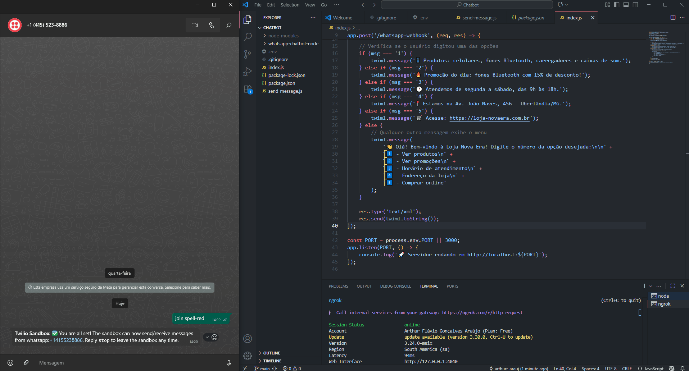

Demonstração
Descrição
Este projeto é um chatbot interativo para WhatsApp, desenvolvido com Node.js, Express e a API da Twilio. Ao receber qualquer mensagem, o bot responde com um menu numérico interativo, permitindo ao usuário consultar informações como produtos, promoções e horários de forma automatizada.
Tecnologias Utilizadas
- Node.js
- Express.js
- Twilio API
- Dotenv
- Ngrok
💻 Código-fonte: Ver no GitHub